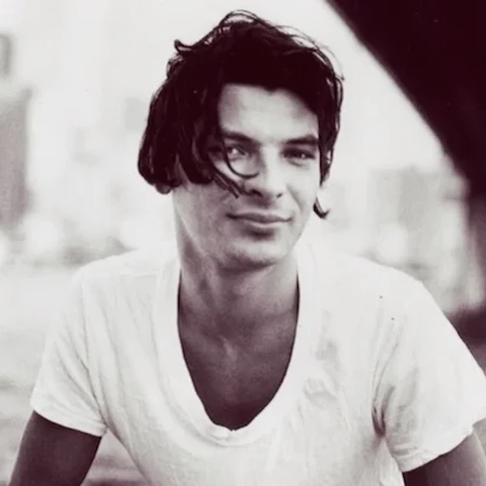
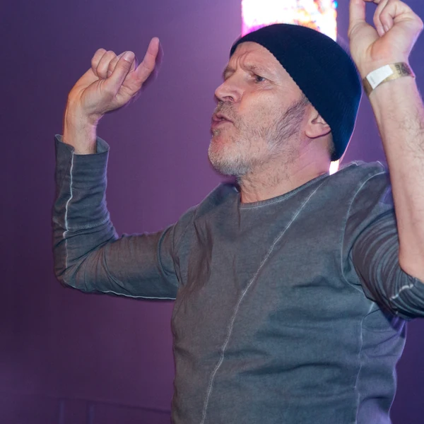
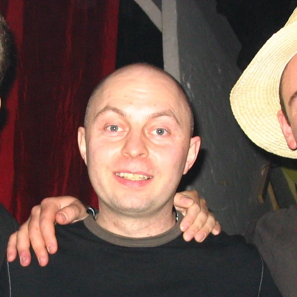
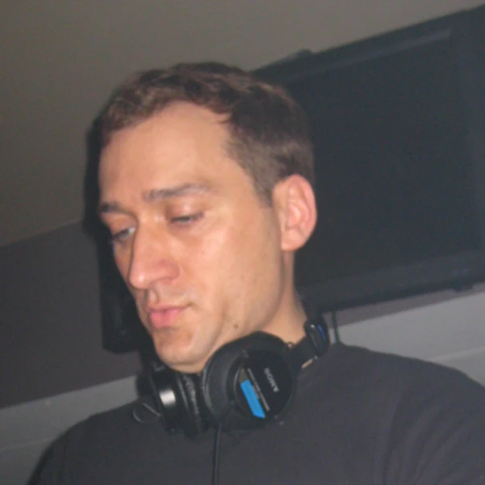
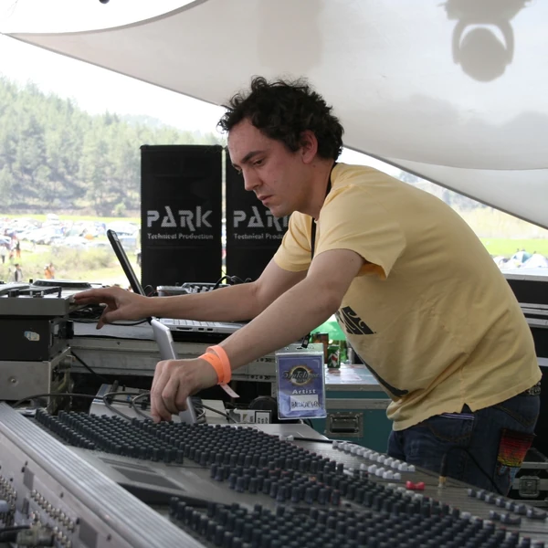
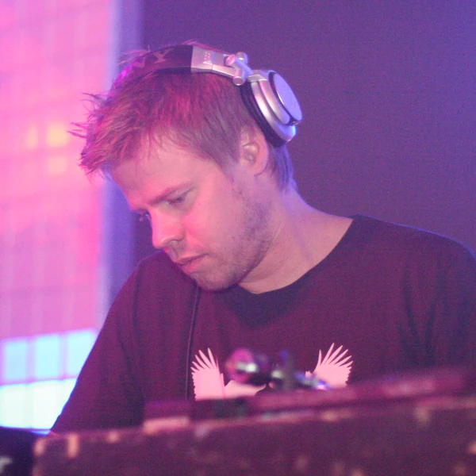
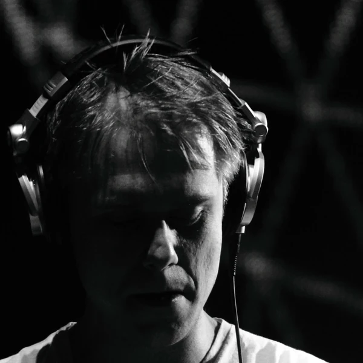

Trance is a form of Electronic Dance Music that builds its momentum through repeating electronic patterns and gradual changes in the arrangement. It developed in European clubs around the beginning of the 1990s, drawing on Techno, House and earlier electronic music. A typical Trance track has a steady dance beat, but much of its character comes from what happens above that beat. Synthesiser sequences develop over time, musical layers are introduced or removed, and a long passage might build towards the return of a melody or the full rhythm. Some styles place the melody at the centre, while harder or more psychedelic forms are more concerned with repetition and sound. The tracks are often long because they were designed to be mixed by DJs rather than squeezed into radio formats. Trance can sound restrained or extremely dramatic depending on the branch. What connects them is the use of repetition and musical anticipation to hold a dance floor's attention for more than a few minutes.
The word trance normally describes a state of deep concentration or absorption, and that is the idea behind the musical name. Rather than relying on constant changes, Trance keeps familiar patterns going long enough for small developments to become important. The term began to circulate around European electronic dance scenes during the early 1990s, although music with a similar repetitive approach existed before anyone settled on a label for it. The boundaries between Trance and Techno were particularly uncertain at first. A track might be sold under one name in one country and a different name somewhere else. As the genre became more melodic and gained a larger audience, Trance developed a clearer identity, along with a growing collection of subgenre labels. Despite the name, listeners do not need to enter some mysterious altered state to understand the music. The important connection is with sustained attention, something producers can encourage through rhythm without making any supernatural claims.
Trance took shape around the turn of the 1990s as European producers experimented with the hypnotic rhythms of Techno and Acid House. Germany became an important early centre, particularly the clubs and independent labels around Frankfurt. The first forms could be fairly tough and mechanical, with repeating sequences that changed slowly instead of building towards a big melody. During the middle of the decade, melodic approaches became increasingly prominent, and Trance spread through clubs in Britain and across continental Europe. Another branch grew through international travelling and party networks connected with Goa in India, developing a more psychedelic sound and a somewhat different culture. By the late 1990s and early 2000s, major events and international DJ tours had made melodic Trance a large commercial attraction. The genre then divided into more specialised styles, some faster and harder and others more restrained. Changes in festival tastes pushed parts of Trance away from the commercial spotlight, but its club networks and dedicated audiences continued. Its history is less a straight line of progress than several overlapping scenes that happened to share a name.
Trance usually has a regular kick drum with a repeating bass pattern that gives the music a steady foundation. Synthesiser phrases are then layered above it, often changing a note, tone or effect a little at a time. A common arrangement moves from a full rhythm into a breakdown where the main drums become quieter or disappear. That leaves room for the melody or other electronic sounds to develop before the beat returns. Producers can spend several minutes preparing for that moment, which helps explain why Trance tracks tend to run longer than a conventional Pop single. The melody is especially important in uplifting styles, where broad chords and long sustained notes are common. Harder forms may rely more on rhythm, while Psychedelic Trance uses dense, rapidly changing electronic patterns. The difference between these styles can be substantial. What makes them recognisably related is the way repetition builds anticipation and how shifts in the arrangement change the listener's sense of momentum.







Trance grew alongside the expansion of European rave culture during the 1990s. For many dancers, its long passages and gradual changes fitted the idea of a night built around a shared experience rather than a succession of short songs. International DJ tours, radio programmes and later online communities helped people follow scenes far beyond their own cities. The genre also became closely associated with large events that promised a sense of unity among people who might otherwise have very little in common. There is something appealing about that ideal, although a festival ticket and an impressive lighting rig are not substitutes for an inclusive music scene. As Trance grew commercially during the 2000s, smaller clubs and independent producers continued developing less marketable styles. The genre has also faced a familiar criticism that its melodies can be excessively sentimental or predictable. Its continued following suggests that audiences are quite capable of deciding for themselves how much emotion they want in their dance music. More importantly, Trance helped establish the international networks and expectations that now shape much of festival culture.